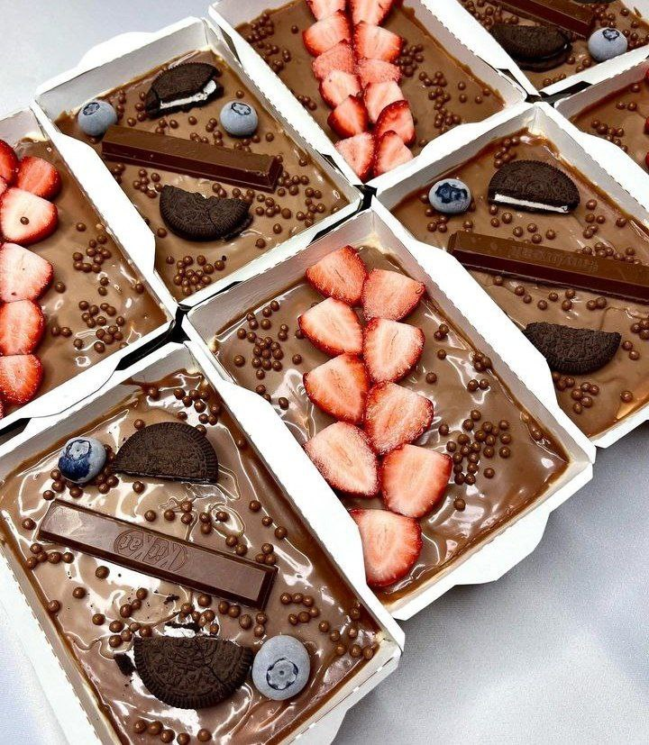

|  | *Kerakli mahsulotlar: un – 80 gramm; kakao kukuni – 4 osh qoshiq; qabartma – 1 choy qoshiq; tuxum – 5 dona; shakar – 170 gramm; banan – 1-2 dona; tvorog – 300 gramm; shakar upasi – 100 gramm; qaymoq – 200 ml; qora shokolad – 120 gramm; sariyog‘ – 1 osh qoshiq; sut – 2 osh qoshiq; tuz. Tayyorlanish jarayoni: Un va qabartma elakdan o‘tkaziladi. Tuxum oqlari sarig‘idan ajratiladi va bir chimdim tuz solinib, mikser qilinadi. Mikser qilish jarayonida tuxum oqiga asta-sekin shakar qo‘shib boriladi. Massaga sekin tuxum sarig‘i qo‘shiladi va yana mikser qilinadi. Un va qabartma aralashmaga qo‘shiladi, xamir asta-sekin aralashtiriladi. Tayyor bo‘lgan xamir qolipga quyiladi, 40-45 daqiqa davomida 170 daraja pechda pishirishga qo‘yiladi. Biskvit pishgach, 5-6 soatga muzlatkichga qo‘yiladi. Banan va tvorog blenderda maydalanadi, ustidan shakar upasi qo‘shiladi. Qaymoq mikser qilinadi va ehtiyotkorlik bilan tvorog aralashmasiga qo‘shiladi. Biskvit aylanasiga 2-3 qismga bo‘linadi. Ularning orasiga qaymoqli krem surtilib, bir-birining ustiga qo‘yiladi. Biskvitning yon qismlariga ham krem surtiladi va 4-5 soatga muzlatkichga qo‘yiladi. Shuningdek, biskvitni shakarli suv bilan namlash mumkin. Shokoladning yarmi maydalanib, sariyog‘ va sut bilan eritib olinadi. Aralashma tort ustidan quyiladi va yana 15-20 daqiqaga muzlatkichga qo‘yiladi. Qora shokoladning qolgan qismi qirg‘ichdan o‘tkaziladi va tortning yuzasiga sepiladi. Yoqimli ishtaha!Sovugan kremni konditer qopchasiga quyib, uchiga istalgan shakl o'rnatamiz yoki o'rnatmasa ham bo'ladi.Qaymoqni ozroq ko'pirgunicha ko'pirtirib olamiz. Alohida idishda tvorogli pishloq, shakar upasi va vanil shakarini ko'pirtiramiz. Qaymoq va tvorogli pishloqni birlashtirib, aralashtiramiz va 10-15 daqiqaga muzlatgichga yuboramiz.Qulupnayni blender yordamida shakar bilan maydalab olamiz. Bezak uchun 3-4 tasini olib qo'yamiz.Pechenyeni o'rtacha bo'laklarga bo'lamiz.Shaffof bokalga qavat-qavat qilib, qulupnayli pyure, pechenye, qaymoqli kremni solamiz. Shunday tarzda idish to'lgunicha davom etamiz.Desertni muzlatgichga 3 soatga yuboramiz. Dasturxonga tortishdan avval qulupnay bilan bezak beramiz. Yoqimli ishtaha! |